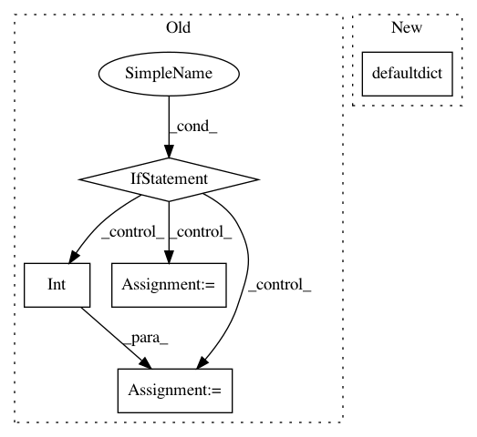

367ee86aeea0dc510f01ce0ef58dc551d1d4d86b,service/server.py,BertSink,run,#BertSink#,148
Before Change
msg = self.receiver.recv_multipart()
client_id = msg[0]
if len(msg) == 3:
// register a new client
client_checksum[client_id] = int(msg[2])
pending_checksum[client_id] = 0
pending_client[client_id] = []
elif len(msg) == 5:
arr_info, arr_val = jsonapi.loads(msg[2]), msg[4]
X = np.frombuffer(memoryview(arr_val), dtype=arr_info["dtype"])
X = X.reshape(arr_info["shape"])
client_info = client_id.split(b"@")
client_id = client_info[0]
partial_id = client_info[1] if len(client_info) == 2 else 0
pending_client[client_id].append((X, partial_id))
pending_checksum[client_id] += X.shape[0]
self.logger.info("received %d of client %s (%d/%d)" % (X.shape[0], client_id,
pending_checksum[client_id],
client_checksum[client_id]))
else:
raise NotImplementedError
// check if there are finished jobs, send it back to workers
finished = [(k, v) for k, v in pending_client.items() if pending_checksum[k] == client_checksum[k]]
for client, tmp in finished:
self.logger.info(
"client %s %d samples are done! sending back to client" % (client, client_checksum[client]))
After Change
self.receiver = self.context.socket(zmq.PULL)
self.receiver.bind("ipc://*")
self.address = self.receiver.getsockopt(zmq.LAST_ENDPOINT).decode("ascii")
pending_checksum = defaultdict(int)
pending_client = defaultdict(list)
while not self.exit_flag.is_set():
msg = self.receiver.recv_multipart()
In pattern: SUPERPATTERN
Frequency: 3
Non-data size: 5
Instances
Project Name: hanxiao/bert-as-service
Commit Name: 367ee86aeea0dc510f01ce0ef58dc551d1d4d86b
Time: 2018-11-21
Author: hanhxiao@tencent.com
File Name: service/server.py
Class Name: BertSink
Method Name: run
Project Name: pantsbuild/pants
Commit Name: 9d16240c327a5803cb017d83165dd460fbb8f472
Time: 2016-03-28
Author: cheister@gmail.com
File Name: src/python/pants/backend/jvm/tasks/junit_run.py
Class Name: JUnitRun
Method Name: _get_failed_targets
Project Name: ysig/GraKeL
Commit Name: 040cd3e3f2addbc75aa435283b6ea425763861cb
Time: 2018-03-27
Author: y.siglidis@gmail.com
File Name: grakel/kernels/odd_sth.py
Class Name:
Method Name: dag